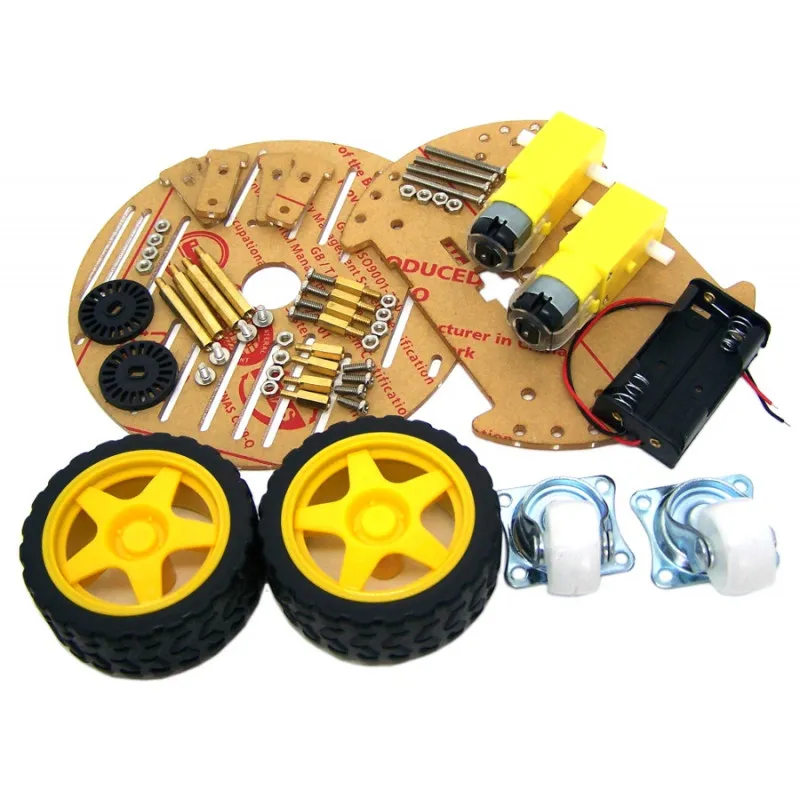
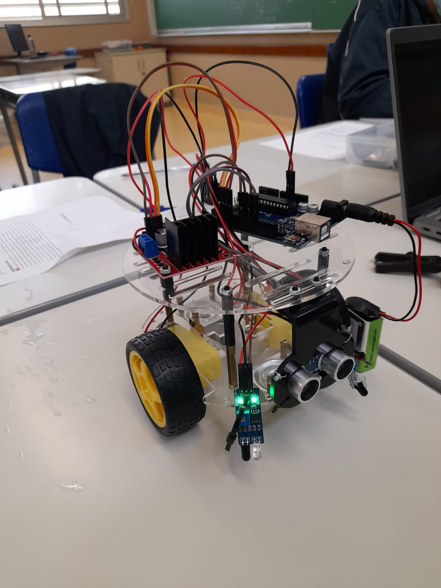

Descrição Sobre O Carrinho:
TEMA DO CARRINHO: Transporte de lixo hospitalar
OBJETIVO: Garantir o descarte adequado e seguro de resíduos hospitalares, facilitando o trabalho dos profissionais da saúde. O carrinho foi projetado para oferecer praticidade, segurança e eficiência no manejo de materiais contaminantes, contribuindo para um ambiente hospitalar mais limpo e organizado.
PÚBLICO-ALVO: Profissionais da saúde, especialmente aqueles que lidam diretamente com o descarte de resíduos em hospitais e clínicas, como enfermeiros, técnicos de enfermagem e auxiliares de limpeza.
Características:
Descrição do Carrinho:
O carrinho é projetado para o transporte seguro e eficiente de lixo hospitalar, contando com as seguintes especificações técnicas:
- Quatro rodas para maior estabilidade e mobilidade.
- Sensor de proximidade para garantir segurança e evitar colisões durante o movimento.
- Dois motores (um em cada roda) proporcionando tração e controle precisos para fácil manuseio.
- Conexão Bluetooth HC-05 permitindo controle remoto e integração com sistemas automatizados.
- Bateria 9V Alcalina garantindo autonomia para longas operações.
- Conector de Bateria 9V para P4 facilitando a conexão e troca da bateria.
- Pilha AA 1,5V (Kit com 4 unidades) fornecendo energia adicional para componentes auxiliares.
Este design visa não apenas praticidade, mas também a funcionalidade e a segurança no ambiente hospitalar, tornando o descarte de lixo hospitalar mais eficiente e com menor risco para os profissionais de saúde.
Funções do Carrinho:
-

Acionamento: O carrinho recebe um alerta do aplicativo que o orienta para o local desejado. -

Deslocamento: O carrinho vai até o destino e aguarda o profissional colocar os objetos. -

Descarregar: O carrinho realiza o descarregamento do lixo no local correto.